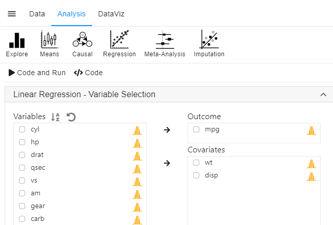
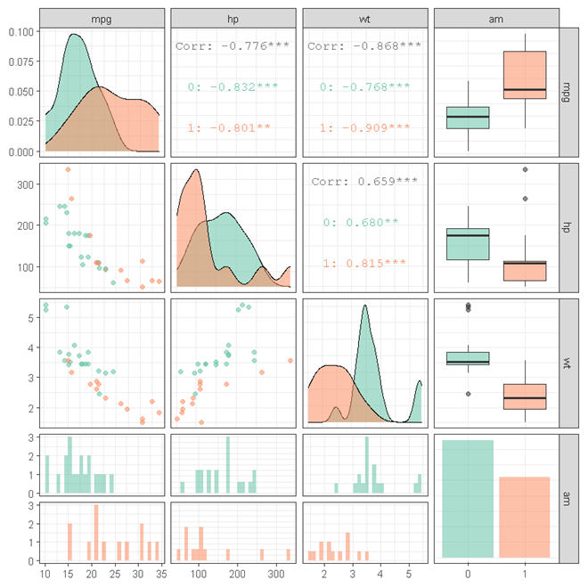
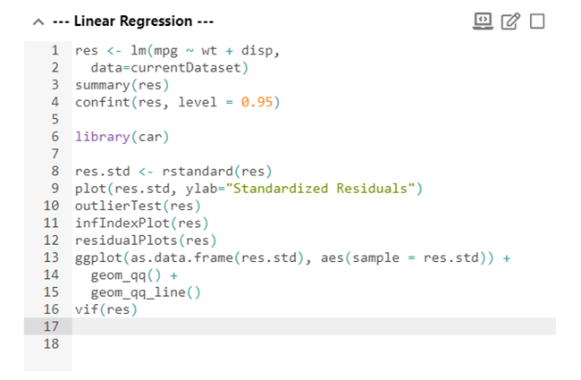
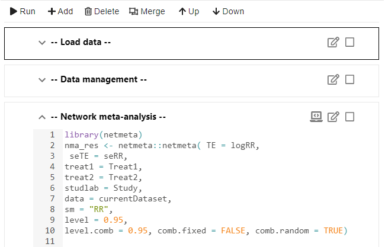

StatsNotebook is a full featured open source statistical package. Its design focuses on Simplicity, Functionality and Reproducibility.

StatsNotebook provides simple interface for a large range of analyses and data visualisation. Most of analyses can be completed with just a few clicks.
The following analyses are currently supported in StatsNotebook, and Rexi will ensure that the list will keep growing…

The following plots can be easily made in StatsNotebook with ggplot2.
 StatsNotebook is fully integrated with R, the most powerful statistical language with a vibrant community of statistics gurus. The Notebook interface is a R console in disguise! You can interact directly with R and run any R codes in the Notebook interface.
 StatsNotebook is designed for reproducible research. R codes are arranged in blocks in the notebook interface. Analyses can be re-run and results regenerated any time.
Dr. Gary Chan, Co-founder
Dr. Janni Leung, Co-founder
–UNIDENTIFIED–, Co-founder
Ms. Carmen Lim
Ms. Tianze Sun
Dr. Daniel Stjepanović